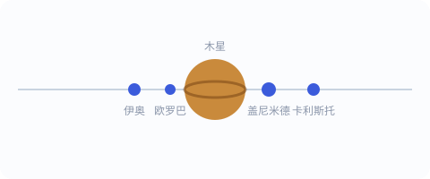

一、木星的“四颗小月亮”
1610 年初，伽利略把望远镜对准木星，发现它旁边跟着四颗小星，排成一线。连续几夜观察后他确认：这四颗星在绕着木星转，而且各有各的周期。他把它们献给了托斯卡纳大公，称为“美第奇星”——今天我们知道它们叫木星卫星（伊奥、欧罗巴、盖尼米德、卡利斯托）。

这个发现意义极大：它第一次提供了“一个天体绕着另一个非地球天体转”的活生生的例子，为日心说添了一块坚实的基石。
二、月亮并不“完美”
用望远镜看月亮，伽利略看到的是高山、深谷和环形坑，而不是古人想象中光滑无瑕的“天体球体”。他甚至根据明暗交界处的阴影，估算出月面山峰的高度。
这说明：天上的物体和地上的岩石泥土是同一种材料。天与地的绝对分野，第一次被一台小小的管子戳破了。这也是科学方法的精髓——不看权威怎么说，只看眼睛真正看到了什么。
三、金星像月亮一样“圆缺”
伽利略接着发现：金星相位完整得惊人——它会出现从弯月、半圆到满月的所有形态。这个现象只有在金星绕太阳运行时才说得通：当它跑到太阳另一侧时，我们看到的是“满”的；转到地球这侧时，我们看到的是“弯”的。
如果一切绕地球转（地心说），金星永远只会在太阳附近、且不该出现完整的盈亏变化。金星的相位，几乎是对日心说的一记“实锤”。
四、太阳也会“长斑”、也会转
伽利略还把望远镜（加上减光装置）对准太阳，记录到表面有移动的黑斑——太阳黑子。他追踪黑子的位移，算出太阳大约在二十多天自转一圈。
连太阳都不是“永恒不变、完美无瑕”的。天体的神圣光环，又少了一圈。
五、为哥白尼撑腰
把这些发现串起来：木星有自己的卫星、金星绕日盈亏、月球和太阳都“不完美”——它们共同指向同一个人几十年前的猜想。哥白尼在 1543 年提出：太阳静止在中心，地球是绕日运转的行星之一。伽利略的望远镜，成了这一学说的“现场证人”。
与同时代的开普勒互补：伽利略用望远镜“看见”了卫星和相位，开普勒用计算“算准”了行星的椭圆轨道。两人一观测、一理论，把日心说从哲学猜想变成了可验证、可计算的体系。
六、一本让全欧洲炸锅的小书
1610 年，伽利略把这些发现写成《星空信使》出版。欧洲轰动了：有人不信，亲自买了望远镜来核对；有人仍坚持那是镜片幻觉。但事实摆在那里——看天的方式，永远地变了。
一句话记住：望远镜不是伽利略发明的，但他是第一个用它“认真看天”、并把看到的东西写成证据的人。观测，从此成为科学的硬通货。